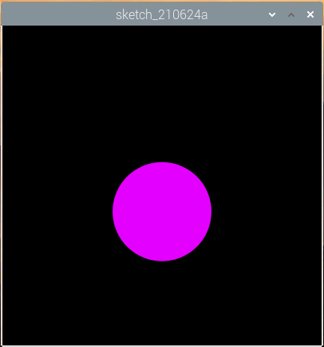
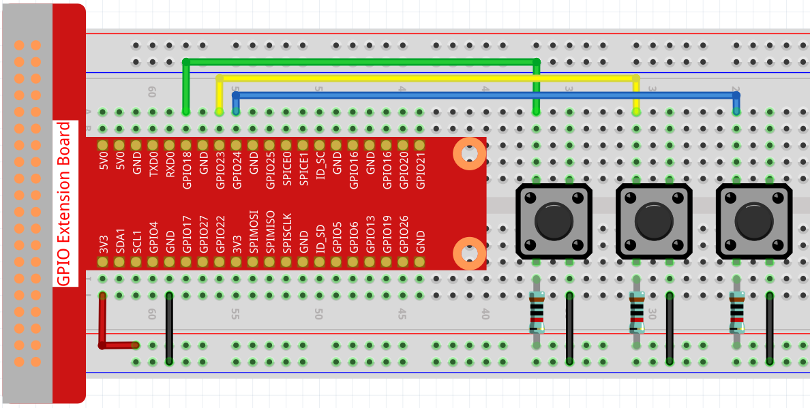

Nota
Ciao, benvenuto nella Community di Facebook dedicata agli appassionati di SunFounder Raspberry Pi, Arduino e ESP32! Approfondisci le tue conoscenze su Raspberry Pi, Arduino e ESP32 insieme ad altri appassionati.
Perché unirsi a noi?
Supporto Esperto: Risolvi problematiche post-vendita e sfide tecniche con l’aiuto della nostra comunità e del nostro team.
Impara e Condividi: Scambia consigli e tutorial per migliorare le tue competenze.
Anteprime Esclusive: Ottieni accesso anticipato agli annunci di nuovi prodotti e alle anteprime.
Sconti Speciali: Approfitta di sconti esclusivi sui nostri prodotti più recenti.
Promozioni Festive e Giveaway: Partecipa a concorsi e promozioni speciali.
👉 Sei pronto a esplorare e creare con noi? Clicca su [Qui] e unisciti subito!
Punto in Oscillazione
In questo progetto, sono collegati 3 pulsanti: uno per cambiare la dimensione del punto, uno per cambiarne la posizione e l’ultimo per cambiare il colore. Premendo tutti e tre i pulsanti contemporaneamente, otterrai un punto che oscilla e cambia colore.
Collegamenti
Sketch
import processing.io.*;
// Definisci un'istanza dell'oggetto Dot
Dot myDot;
// Definisci i pin che leggeranno la pressione dei pulsanti
int[] pins = { 18, 23, 24 };
void setup() {
size(400, 400);
// Cambia la modalità colore del disegno in HSB
colorMode(HSB, 360, 100, 100);
noStroke();
for (int i = 0; i < pins.length; i++) {
GPIO.pinMode(pins[i], GPIO.INPUT_PULLUP);
}
// Crea un punto al centro dello schermo
myDot = new Dot(width / 2, height / 2, 100, 255);
}
void draw() {
background(0);
// Modifica le proprietà del punto in base ai pulsanti premuti
if (GPIO.digitalRead(pins[0]) == GPIO.LOW) {myDot.setSize();}
if (GPIO.digitalRead(pins[1]) == GPIO.LOW) {myDot.setPosition();}
if (GPIO.digitalRead(pins[2]) == GPIO.LOW) {myDot.setColor();}
// Aggiorna lo stato del punto
myDot.update();
// E disegnalo sullo schermo
myDot.show();
}
class Dot {
float initX;
float initY;
float currentX;
float currentY;
int positionRange = 60;
float initSize;
float currentSize;
int sizeRange = 50;
int initColor;
int currentColor;
int ColorRange = 80;
float timer = 0.0;
float speed = 0.06;
Dot(float x, float y, float s, int c) {
initX = x;
initY = y;
currentX = x;
currentY = y;
initSize = s;
currentSize = s;
initColor = c;
currentColor = c;
}
void setSize() {
currentSize = initSize + sizeRange * sin( timer );
}
void setPosition() {
currentY = initY + positionRange * cos( timer *2);
}
void setColor() {
currentColor = int(initColor + ColorRange * sin( timer ));
}
void update() {
timer += speed;
}
void show() {
fill(currentColor, 100, 100);
ellipse(currentX, currentY, currentSize, currentSize);
}
}
Come funziona?
Invece di disegnare direttamente il punto, qui creiamo una classe Dot.
Quindi, dichiariamo l’oggetto (in questo caso myDot).
Questo è un modo semplice per disegnare punti con più proprietà identiche. Per esempio, aggiungendo tre funzioni al punto in questo progetto - cambiare dimensione, cambiare posizione e cambiare colore - ogni punto dichiarato avrà le stesse funzioni. Possiamo usare lo stesso pulsante per far eseguire le stesse azioni a tutti i punti, oppure possiamo usare pulsanti diversi per controllare ogni punto separatamente.
L’uso delle classi rende il tuo sketch più elegante, potente e flessibile.
Class (computer programming) - Wikipedia
Passiamo ora ad analizzare più nel dettaglio la classe Dot.
Dot(float x, float y, float s, int c)
Nella dichiarazione, è necessario passare quattro parametri, che sono le coordinate X e Y della posizione, la dimensione e il colore (qui impostato sulla modalità colore HSB <HSB color mode>`_).
Ogni parametro viene assegnato a 2 serie di valori (valore iniziale e valore corrente).
float initX;
float initY;
float currentX;
float currentY;
int positionRange = 60;
float initSize;
float currentSize;
int sizeRange = 50;
int initColor;
int currentColor;
int ColorRange = 80;
Oltre ai valori iniziali e correnti, è presente anche una serie di valori di intervallo. Non è difficile comprendere che il valore iniziale determina lo stato iniziale del punto (definito dai parametri passati), mentre il valore corrente varia all’interno dell’intervallo per permettere al punto di muoversi.
Pertanto, ad eccezione del valore della coordinata X, i valori correnti degli altri tre parametri sono calcolati come segue:
void setSize() {
currentSize = initSize + sizeRange * sin( timer );
}
void setPosition() {
currentY = initY + positionRange * cos( timer *2);
}
void setColor() {
currentColor = int(initColor + ColorRange * sin( timer ));
}
Se conosci le funzioni trigonometriche, non dovrebbe essere difficile capire sine and cosine, che forniscono un cambiamento periodico e fluido (da -1 a 1) del valore corrente del punto.
Aggiungiamo un seme, timer, per la variazione periodica. Aggiunge un valore fisso nel metodo update() ed è chiamato in draw().
void update() {
timer += speed;
}
Infine, il punto viene visualizzato in base al valore corrente utilizzando il metodo show(), che è anch’esso chiamato in draw().
void show() {
fill(currentColor, 100, 100);
ellipse(currentX, currentY, currentSize, currentSize);
}
Che altro?
Avendo padroneggiato l’uso delle classi, sei già in grado di disegnare più punti con le stesse proprietà. Perché non provare a fare qualcosa di più interessante? Per esempio, come disegnare un sistema binario stabile, oppure creare un gioco come “DUET”?
Per maggiori dettagli, consulta il Processing Reference.